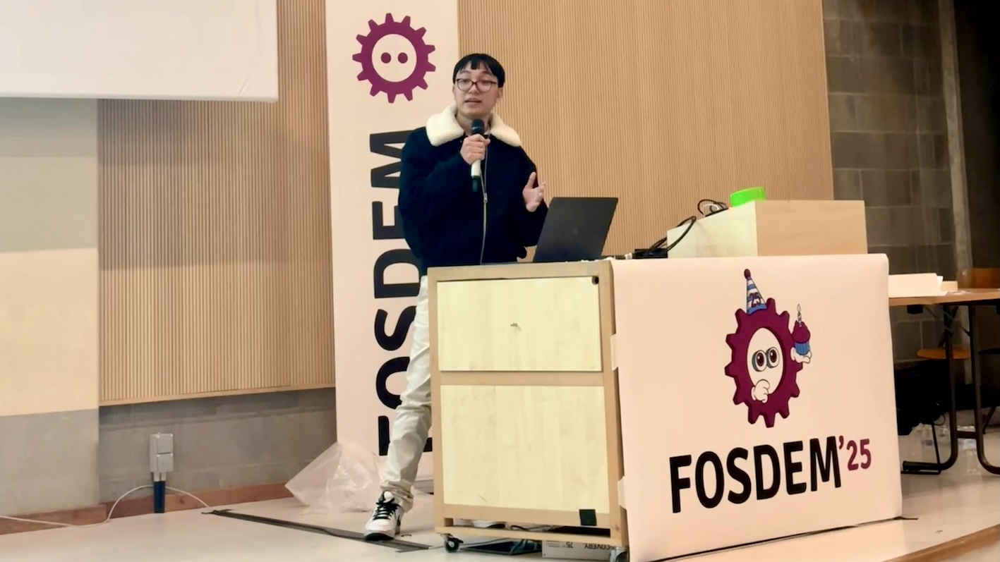
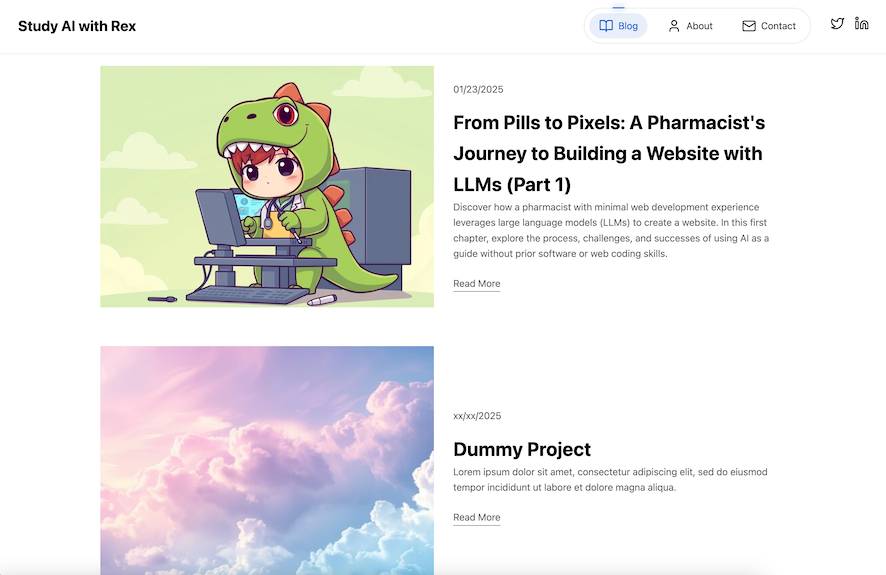
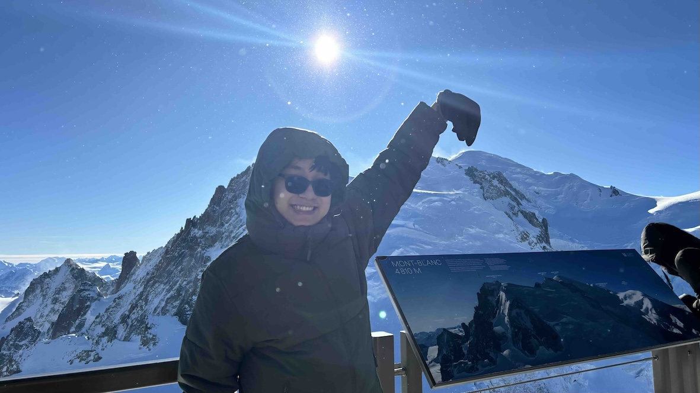

Changelog from my journey
Following my journey from a pharmacist to a AI x Healthcare enthusiast.
February 03 2025
OpenMedical
Started the OpenMedical project to develop open-source LLMs for solving medical problems
February 01 2025
FOSDEM 2025
A trip to Brussels to speak on "Building Local AI with a Full-Stack Approach"

January 23 2025
First Blog Post
Published my first blog post about using AI to learn web development.

January 3 2025
Chamonix-Mont-Blanc
Trip to Mont Blanc, the highest mountain in Western Europe.

March 2024
UI Improvements
Enhanced the website's user interface and user experience.
- ✅ Added animations
- ✅ Improved navigation
- ✅ Implemented dark mode